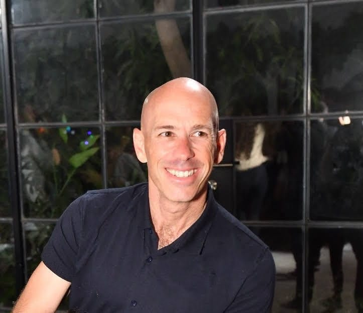
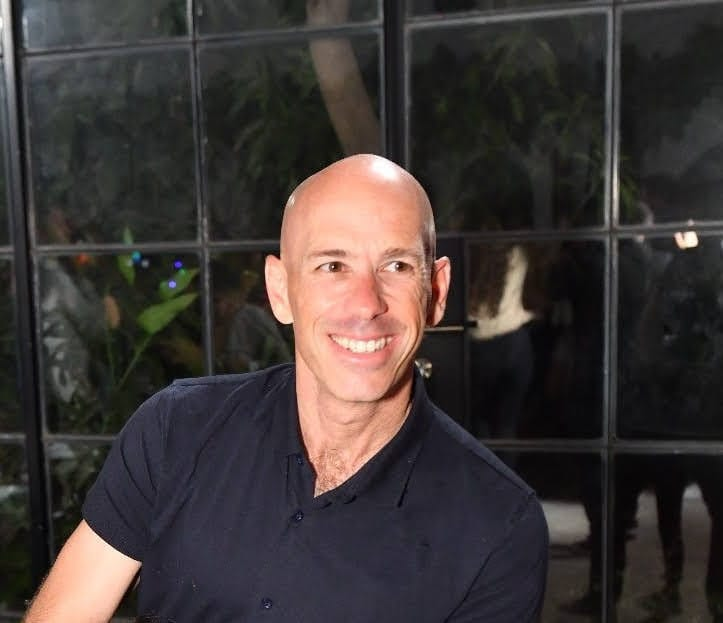

התהליך
במפגשים איתי, הספורטאים והספורטאיות ילמדו וירכשו כלים לחיזוק הביטחון העצמי, שיפור יכולות הריכוז והמיקוד, התאוששות מאי הצלחות, התמודדות עם לחץ ועוד.
מי אני
שמי דותן אבירם. כמי שמשתתף בעצמי בתחרויות סבולת (איש ברזל וטריאתלונים) וכמי שכל חייו עוסק בספורט ובעולם מדעי ההתנהגות – אני מאמין גדול באימון מנטלי ככלי לשיפור ביצועים ספורטיביים. יש לי ניסיון מוכח בעבודה עם ספורטאים וספורטאיות ממגוון ענפים (קבוצתיים ויחידניים) לחיזוק החוסן המנטלי והגעה לשיאים חדשים.
מהשטח

 

מעניין אתכם לשמוע עוד?
מוזמנים לפנות אלי בווטסאפ, בטלפון 052-9245186, או במייל: dotan.aviram@gmail.com.